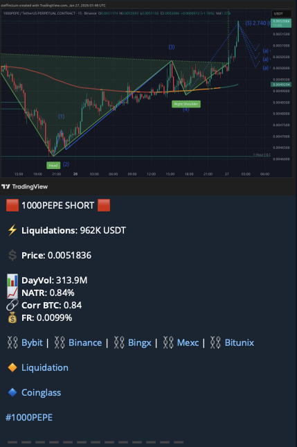

🎯 Введение
Эта инструкция научит вас торговать на фьючерсах криптовалют. Система подходит для новичков и основана на простых, понятных сигналах.
📱 ЧТО ОЗНАЧАЕТ КАЖДЫЙ ПАРАМЕТР

(January 27, 2026, 1:48 UTC)
1. 1000PEPE SHORT 🔴
Что это: Тип сигнала - открытие короткой позиции (ставка на падение цены)
Как использовать:
- SHORT = продаем (открываем короткую позицию)
- LONG = покупаем (открываем длинную позицию)
- Если видите "SHORT", значит бот ожидает падение цены
- Если видите "LONG", значит бот ожидает рост цены
Действие: Когда появляется этот сигнал, открывайте позицию в указанном направлении на бирже
2. ⚡ Liquidations: 962K USDT
Что это: Объем ликвидаций в долларах США (USDT)
Как интерпретировать:
- Менее 100K USDT = слабый сигнал, можно пропустить
- 100K - 500K USDT = средний сигнал, торговать с осторожностью
- 500K - 1M USDT = сильный сигнал ✅ (как на примере)
- Более 1M USDT = очень сильный сигнал, высокий потенциал движения
Правило: Чем больше сумма ликвидаций, тем сильнее ожидаемое движение цены. На скриншоте 962K USDT - это сильный сигнал!
Примечание: Для BTC, ETH и более менее нормальных монет из топ 10-20 криптовалют 1М это мало нужно это учитывать, например на BTC от 60млн ликвидаций будет расцениваться как сильный сигнал.
3. 💰 Price: 0.0051836
Что это: Текущая цена актива в момент сигнала
Как использовать:
- Это цена входа в позицию
- Запишите эту цену перед входом
- Используйте для расчета стоп-лосса и тейк-профита
Пример:
Если сигнал SHORT при цене 0.0051836, открывайте короткую позицию максимально близко к этой цене
4. 📊 DayVol: 313.9M
Что это: Дневной объем торгов в миллионах долларов
Как интерпретировать:
- Менее 50M = низкая ликвидность, избегайте
- 50M - 200M = средняя ликвидность, приемлемо
- Более 200M = высокая ликвидность ✅ (как на примере - 313.9M)
Правило: Торгуйте только активы с дневным объемом более 100M. Высокий объем = меньше проскальзываний, легче войти и выйти из позиции.
5. 📈 NATR: 0.84%
Что это: Normalized Average True Range - нормализованная средняя волатильность
Как интерпретировать:
- Менее 0.5% = низкая волатильность, маленький потенциал прибыли
- 0.5% - 1.5% = оптимальная волатильность ✅ (как на примере - 0.84%)
- Более 1.5% = высокая волатильность, высокий риск
Правило: Лучшие сделки при NATR от 0.6% до 1.2%. Это означает, что актив движется достаточно для прибыли, но не слишком рискованно.
6. 🔗 Corr BTC: 0.84
Что это: Корреляция с биткоином (от -1 до +1)
Как интерпретировать:
- 0.7 - 1.0 = сильная положительная корреляция (движется вместе с BTC) ✅
- 0.3 - 0.7 = средняя корреляция
- -1.0 - 0.3 = слабая или отрицательная корреляция
⚠️ Правило: Перед входом в сделку откройте график BTC и убедитесь, что он поддерживает ваш сигнал.
7. 💸 FR: 0.0099%
Что это: Funding Rate - ставка финансирования на фьючерсах
Как интерпретировать:
- Положительная (как 0.0099%) = больше лонгов, лонгеры платят шортистам
- Отрицательная = больше шортов, шортисты платят лонгерам
- Более ±0.01% = рынок перегрет в одну сторону
Правило: Лучшие SHORT сделки при FR > +0.008%, лучшие LONG сделки при FR < -0.008%
⚠️ УПРАВЛЕНИЕ РИСКАМИ
🚨 Золотые правила риск-менеджмента:
1. Размер позиции
Никогда не рискуйте больше 1-2% депозита на одну сделку
Пример: Депозит 1000 USDT → максимальный риск 10-20 USDT
2. Плечо (Leverage)
- Новички: 3x-5x максимум
- Опытные: 10x-15x
- НИКОГДА не используйте 50x-100x!
3. Соотношение риск/прибыль
Минимум 1:2
- Рискуете 2% → цельтесь на 4% прибыли
- Рискуете 10 USDT → цельтесь на 20 USDT прибыли
⚠️ ВСЕГДА используйте стоп-лосс! Без исключений!
🎯 ТЕЙК-ПРОФИТЫ И СТОП-ЛОССЫ
💡 Главный принцип: Крипта непредсказуема. Как только позиция в плюсе — защищайте прибыль. Не ждите идеального выхода.
📌 Как выставлять тейк-профиты
Схема разделения позиции (рекомендуется)
| Уровень |
Цель |
Закрыть объём |
Действие со стопом |
| TP1 |
+4% – +5% |
30–40% позиции |
🔒 Перевести стоп в безубыток |
| TP2 |
+8% – +10% |
40–50% позиции |
🔄 Поставить трейлинг стоп |
| TP3 (опц.) |
+15% – +20% |
Остаток |
Трейлинг стоп догоняет |
Логика: TP1 фиксирует реальную прибыль, TP2 даёт расти позиции дальше. Никогда не держите всё до одного уровня — рынок может развернуться в секунду.
🔒 Перевод в безубыток
Когда и как переводить стоп в безубыток
- Когда: Сразу после срабатывания TP1
- Куда переносить стоп: На цену входа + небольшой буфер (0.1–0.2%) для покрытия комиссий
- Зачем: Худший сценарий — выйти в ноль. Вы уже в безопасности
Пример (LONG):
Вход: 100 USDT → TP1 сработал на 105 USDT → переносим стоп с 98 на 100.15 USDT (вход + буфер на комиссию). Теперь сделка гарантированно не убыточная.
🔄 Трейлинг стоп
Что такое трейлинг стоп и как им пользоваться
Трейлинг стоп — это стоп, который автоматически следует за ценой на фиксированное расстояние. Цена растёт — стоп тянется за ней. Цена откатывает на заданное расстояние — стоп срабатывает и фиксирует прибыль.
Пример (LONG, трейлинг 1.5%):
- Вход: 100 USDT, стоп активирован после TP1
- Цена выросла до 110 → трейлинг стоп стоит на 108.35
- Цена выросла до 120 → трейлинг стоп стоит на 118.2
- Цена откатила с 120 до 118.2 → позиция закрыта с прибылью +18.2%
Рекомендуемый размер трейлинга:
• Низкая волатильность (NATR < 0.8%): 1–1.5%
• Средняя волатильность (NATR 0.8–1.5%): 1.5–2.5%
• Высокая волатильность (NATR > 1.5%): 2.5–4%
⚠️ Трейлинг слишком узкий = выбьет раньше времени на шуме.
⚠️ Трейлинг слишком широкий = вернёте большую часть прибыли.
Ориентируйтесь на NATR × 2 как базовый размер трейлинга.
📋 Алгоритм действий после входа
Вошёл в позицию → сразу выставил SL на –1.5% / –2%
Выставил TP1 на +4–5% (30–40% объёма)
Выставил TP2 на +8–10% (40–50% объёма)
TP1 сработал → перенёс стоп в безубыток (цена входа +0.15%)
TP2 сработал → включил трейлинг стоп на остаток
НЕ передвигай SL вниз (для LONG), если цена идёт против тебя
НЕ отменяй стоп в надежде "отобьётся" — это путь к сливу депо
НЕ усредняйся в убыточную позицию без чёткого плана
🧮 Быстрый расчёт уровней (пример LONG)
Вход: 0.0051836 USDT (1000PEPE)
SL: 0.0051836 × 0.98 = 0.0050799 (–2%)
TP1: 0.0051836 × 1.045 = 0.0054168 (+4.5%)
TP2: 0.0051836 × 1.09 = 0.0056501 (+9%)
Безубыток: 0.0051836 × 1.002 = 0.0051940 (вход + комиссия)
✅ ЧЕК-ЛИСТ ПЕРЕД СДЕЛКОЙ
Liquidations > 500K USDT?
DayVol > 100M?
NATR между 0.5% и 1.5%?
FR поддерживает направление?
График проверен (нет конфликтов)?
BTC проверен (если Corr BTC > 0.7)?
Размер позиции = 1-2% риска?
Плечо не более 10x?
Стоп-лосс установлен?
Тейк-профиты установлены?
⚠️ Если хотя бы один пункт НЕ выполнен → пропускайте сделку!
📊 ПРИМЕРЫ РЕАЛЬНЫХ СДЕЛОК
✅ Пример 1: Сильный SHORT сигнал
| Параметр |
Значение |
Оценка |
| Сигнал |
1000PEPE SHORT |
✅ |
| Liquidations |
962K USDT |
✅ Сильный |
| Price |
0.0051836 |
Цена входа |
| DayVol |
313.9M |
✅ Высокий |
| NATR |
0.84% |
✅ Оптимально |
| Corr BTC |
0.84 |
⚠️ Проверить BTC |
| FR |
0.0099% |
✅ Идеально |
Результат: Вход в SHORT, TP1 +5%, TP2 +10%. Общая прибыль: +7.5% к депозиту
🎯 Introduction
This guide will teach you how to trade cryptocurrency futures. The system is suitable for beginners and based on simple, clear signals.
📱 PARAMETER MEANINGS
(January 27, 2026, 1:48 UTC)
1. 1000PEPE SHORT 🔴
What it is: Signal type - opening a short position (betting on price decline)
How to use:
- SHORT = sell (open a short position)
- LONG = buy (open a long position)
- If you see "SHORT", the bot expects the price to fall
- If you see "LONG", the bot expects the price to rise
Action: When this signal appears, open a position in the indicated direction on the exchange
2. ⚡ Liquidations: 962K USDT
What it is: Volume of liquidations in US dollars (USDT)
How to interpret:
- Less than 100K USDT = weak signal, can skip
- 100K - 500K USDT = medium signal, trade with caution
- 500K - 1M USDT = strong signal ✅ (as in example)
- More than 1M USDT = very strong signal, high movement potential
Rule: The larger the liquidation amount, the stronger the expected price movement. In the screenshot, 962K USDT is a strong signal!
Note: For BTC, ETH and more or less normal coins from the top 10-20 cryptocurrencies of 1M, this little needs to be taken into account, for example, on BTC, 60 million or more liquidations will be regarded as a strong signal.
3. 💰 Price: 0.0051836
What it is: Current asset price at the moment of the signal
How to use:
- This is the entry price for the position
- Write down this price before entry
- Use it to calculate stop-loss and take-profit
Example:
If the signal is SHORT at price 0.0051836, open a short position as close to this price as possible
4. 📊 DayVol: 313.9M
What it is: Daily trading volume in millions of dollars
How to interpret:
- Less than 50M = low liquidity, avoid
- 50M - 200M = medium liquidity, acceptable
- More than 200M = high liquidity ✅ (as in example - 313.9M)
Rule: Trade only assets with daily volume above 100M. High volume = less slippage, easier to enter and exit positions.
5. 📈 NATR: 0.84%
What it is: Normalized Average True Range - normalized average volatility
How to interpret:
- Less than 0.5% = low volatility, small profit potential
- 0.5% - 1.5% = optimal volatility ✅ (as in example - 0.84%)
- More than 1.5% = high volatility, high risk
Rule: Best trades at NATR from 0.6% to 1.2%. This means the asset moves enough for profit, but not too risky.
6. 🔗 Corr BTC: 0.84
What it is: Correlation with Bitcoin (from -1 to +1)
How to interpret:
- 0.7 - 1.0 = strong positive correlation (moves together with BTC) ✅
- 0.3 - 0.7 = medium correlation
- -1.0 - 0.3 = weak or negative correlation
⚠️ Rule: Before entering a trade, open the BTC chart and make sure it supports your signal.
7. 💸 FR: 0.0099%
What it is: Funding Rate - funding rate on futures
How to interpret:
- Positive (like 0.0099%) = more longs, longs pay shorts
- Negative = more shorts, shorts pay longs
- More than ±0.01% = market overheated in one direction
Rule: Best SHORT trades at FR > +0.008%, best LONG trades at FR < -0.008%
⚠️ RISK MANAGEMENT
🚨 Golden Rules of Risk Management:
1. Position Size
Never risk more than 1-2% of deposit per trade
Example: Deposit 1000 USDT → maximum risk 10-20 USDT
2. Leverage
- Beginners: 3x-5x maximum
- Experienced: 10x-15x
- NEVER use 50x-100x!
3. Risk/Reward Ratio
Minimum 1:2
- Risk 2% → aim for 4% profit
- Risk 10 USDT → aim for 20 USDT profit
⚠️ ALWAYS use stop-loss! No exceptions!
🎯 TAKE-PROFITS & STOP-LOSSES
💡 Core principle: Crypto is unpredictable. Once the position is in profit — protect your gains. Don't wait for the perfect exit.
📌 How to set take-profits
Position splitting scheme (recommended)
| Level |
Target |
Close volume |
Stop action |
| TP1 |
+4% – +5% |
30–40% of position |
🔒 Move stop to breakeven |
| TP2 |
+8% – +10% |
40–50% of position |
🔄 Set trailing stop |
| TP3 (opt.) |
+15% – +20% |
Remainder |
Trailing stop catches up |
Logic: TP1 locks in real profit, TP2 lets the position grow further. Never hold everything to one target — the market can reverse in seconds.
🔒 Moving to breakeven
When and how to move stop to breakeven
- When: Immediately after TP1 is triggered
- Where to move stop: To entry price + small buffer (0.1–0.2%) to cover fees
- Why: Worst case scenario — exit at zero. You're now safe
Example (LONG):
Entry: 100 USDT → TP1 triggered at 105 USDT → move stop from 98 to 100.15 USDT (entry + fee buffer). The trade is now guaranteed non-losing.
🔄 Trailing stop
What is a trailing stop and how to use it
A trailing stop is a stop that automatically follows the price at a fixed distance. Price rises — stop follows. Price pulls back by the set distance — stop triggers and locks in profit.
Example (LONG, 1.5% trailing):
- Entry: 100 USDT, trailing activated after TP1
- Price rose to 110 → trailing stop at 108.35
- Price rose to 120 → trailing stop at 118.2
- Price pulled back from 120 to 118.2 → position closed at +18.2% profit
Recommended trailing size:
• Low volatility (NATR < 0.8%): 1–1.5%
• Medium volatility (NATR 0.8–1.5%): 1.5–2.5%
• High volatility (NATR > 1.5%): 2.5–4%
⚠️ Trailing too tight = gets knocked out by noise prematurely.
⚠️ Trailing too wide = you give back a large portion of profit.
Use NATR × 2 as a baseline trailing size.
📋 Action algorithm after entry
Entered position → immediately set SL at –1.5% / –2%
Set TP1 at +4–5% (30–40% volume)
Set TP2 at +8–10% (40–50% volume)
TP1 triggered → moved stop to breakeven (entry price +0.15%)
TP2 triggered → activated trailing stop on remainder
DON'T move SL down (for LONG) if price moves against you
DON'T cancel stop hoping it will "recover" — that's how accounts get blown
DON'T average into a losing position without a clear plan
🧮 Quick level calculation (LONG example)
Entry: 0.0051836 USDT (1000PEPE)
SL: 0.0051836 × 0.98 = 0.0050799 (–2%)
TP1: 0.0051836 × 1.045 = 0.0054168 (+4.5%)
TP2: 0.0051836 × 1.09 = 0.0056501 (+9%)
Breakeven: 0.0051836 × 1.002 = 0.0051940 (entry + fee)
✅ CHECKLIST BEFORE TRADE
Liquidations > 500K USDT?
DayVol > 100M?
NATR between 0.5% and 1.5%?
FR supports direction?
Chart checked (no conflicts)?
BTC checked (if Corr BTC > 0.7)?
Position size = 1-2% risk?
Leverage no more than 10x?
Stop-loss set?
Take-profits set?
⚠️ If at least one point is NOT fulfilled → skip the trade!
📊 REAL TRADE EXAMPLES
✅ Example 1: Strong SHORT Signal
| Parameter |
Value |
Assessment |
| Signal |
1000PEPE SHORT |
✅ |
| Liquidations |
962K USDT |
✅ Strong |
| Price |
0.0051836 |
Entry Price |
| DayVol |
313.9M |
✅ High |
| NATR |
0.84% |
✅ Optimal |
| Corr BTC |
0.84 |
⚠️ Check BTC |
| FR |
0.0099% |
✅ Perfect |
Result: Entered SHORT, TP1 +5%, TP2 +10%. Total profit: +7.5% to deposit